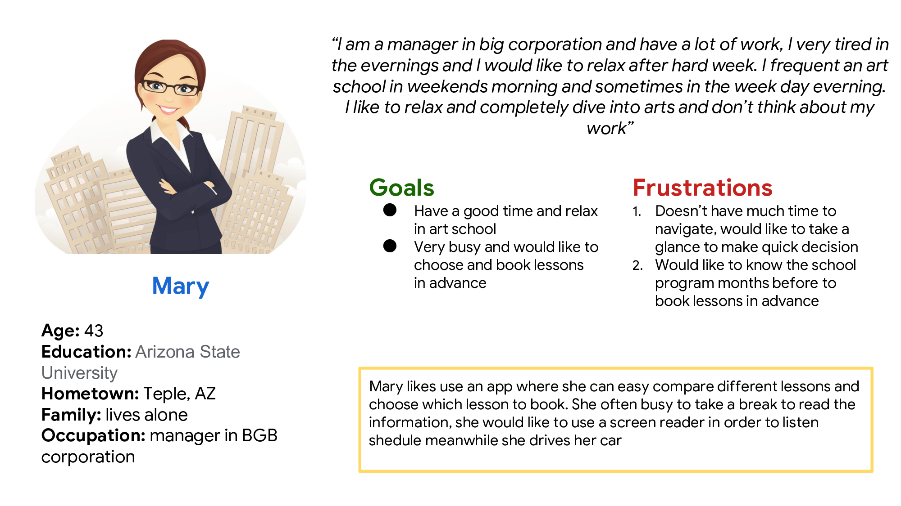
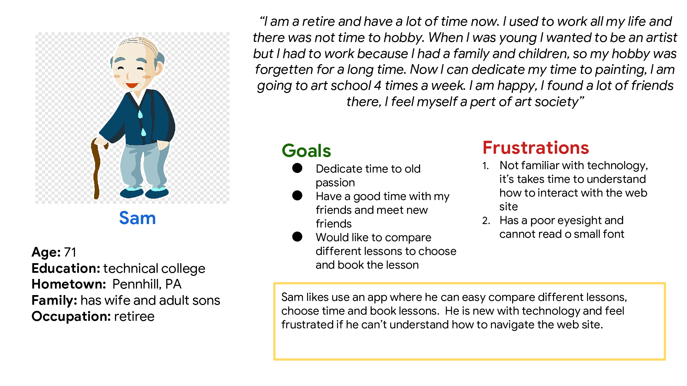
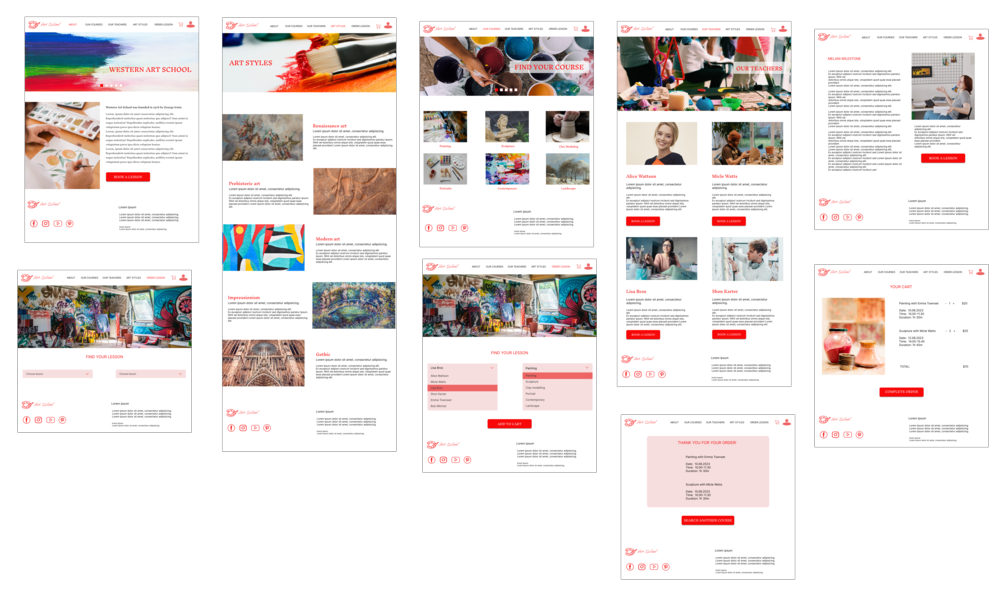

Design Art School Web Site
Art School web site is a site that allow to users search and book lessons in Art School, it’s target customers of any age, from busy workers, famalies with children, retirees and peoples of age above 65 years old
The problem
People above 65 years old, busy workers, families with children can easy access and book lessons in Art School
The goal
Design a web site that allows people easily access, search and book art lessons choosing by date, time, teacher
My role
UX designer designing Art School web site from conception to delivery
Responsibilities
Conducting interviews, paper and digital wireframing, low and high-fidelity prototyping, conducting usability studies, accounting for accessibility and iterating on designs.
User research summary
I conducted interviews and created empathy maps to understand the users I’m designing for and their needs. A primary user group identified through research was retired people of age over 65 years old who has a lot of free time and frequent art school 2-3 times a week. The secondary user group is young lonely people who study or work and don’t have too much time to search shedule and who likes to visit art lessons in their free time.
The user group confirmed initial assumption about art school students and also revealed that some part of users is not familiar with technology, have problems with choosing available lessons.
User pain points:
- Technology: Some users are unfamiliar with technology , as like as old people or children
- Time: Working people don’t have much time to navigate and choose lessons
- Place map: People who moved in their place in recent time have dificulty with understand where and how to reach the school
- Accessibility: Old people, children, foreiners and people with dislexia have difficulty to understand long text pieces
Personas
 Mockups
The high-fidelity ptototype followed the same user flow as the low –fidelity prototype, including design changes made after usability study
Takeaways:
Impact
Users appreciated the web site that is a useful tool to search, compare and book art lessons.
What I learned
I learned that even through the problem I was trying to solve was a big one, but diligentl follow each step of the design process and aligning with specific user needs helped me come up with solutions that were both feasible and useful.
Next steps
- Conduct research on how succesful the web site is in reaching the goal to be comfortable and useful tool to book art lessons.
- Add more resourses and engage more professionals to gather more user experience accessibility comfort.
- Provide a discount system for user who used the web site regulary.